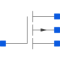

PMOSSimple MOS Transistor |

|
Information
This information is part of the Modelica Standard Library maintained by the Modelica Association.
The PMOS model is a simple model of a p-channel metal-oxide semiconductor FET. It differs slightly from the device used in the SPICE simulator. For more details please care for H. Spiro.
The model does not consider capacitances. A high drain-source resistance RDS
is included to avoid numerical difficulties.
Please note:
In case of useHeatPort=true the temperature dependence of the electrical
behavior is not modelled yet. The parameters are not temperature dependent.
- References:
- Spiro, H.: Simulation integrierter Schaltungen. R. Oldenbourg Verlag Muenchen Wien 1990.
Some typical parameter sets are:
W L Beta Vt K2 K5 DW DL m m A/V^2 V - - m m 50.e-6 8.e-6 0.0085e-3 -0.15 0.41 0.839 -3.8e-6 -4.0e-6 20.e-6 6.e-6 0.0105e-3 -1.0 0.41 0.839 -2.5e-6 -2.1e-6 30.e-6 5.e-6 0.0059e-3 -0.3 0.98 1.01 0 -3.9e-6 30.e-6 5.e-6 0.0152e-3 -0.69 0.104 1.1 -0.8e-6 -0.4e-6 30.e-6 5.e-6 0.0163e-3 -0.69 0.104 1.1 -0.8e-6 -0.4e-6 30.e-6 5.e-6 0.0182e-3 -0.69 0.086 1.06 -0.1e-6 -0.6e-6 20.e-6 6.e-6 0.0074e-3 -1. 0.4 0.59 0 0
Parameters (11)
| useHeatPort |
Value: false Type: Boolean Description: =true, if heatPort is enabled |
|---|---|
| T |
Value: 293.15 Type: Temperature (K) Description: Fixed device temperature if useHeatPort = false |
| W |
Value: 20.0e-6 Type: Length (m) Description: Width |
| L |
Value: 6.0e-6 Type: Length (m) Description: Length |
| Beta |
Value: 0.0105e-3 Type: Transconductance (A/V²) Description: Transconductance parameter |
| Vt |
Value: -1.0 Type: Voltage (V) Description: Zero bias threshold voltage |
| K2 |
Value: 0.41 Type: Real Description: Bulk threshold parameter |
| K5 |
Value: 0.839 Type: Real Description: Reduction of pinch-off region |
| dW |
Value: -2.5e-6 Type: Length (m) Description: Narrowing of channel |
| dL |
Value: -2.1e-6 Type: Length (m) Description: Shortening of channel |
| RDS |
Value: 1e7 Type: Resistance (Ω) Description: Drain-Source-Resistance |
Connectors (5)
| heatPort |
Type: HeatPort_a Description: Conditional heat port |
|
|---|---|---|
| D |
Type: Pin Description: Drain |
|
| G |
Type: Pin Description: Gate |
|
| S |
Type: Pin Description: Source |
|
| B |
Type: Pin Description: Bulk |
Used in Components (1)
|
Modelica.Electrical.Analog.Examples.Utilities
CMOS NAND Gate (see Tietze/Schenk, page 157) |